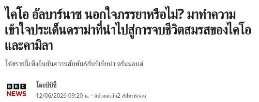
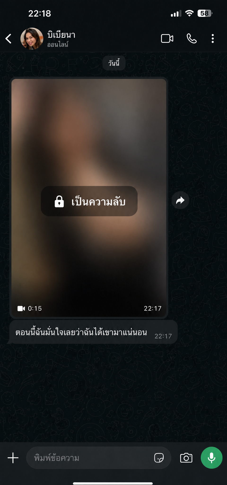
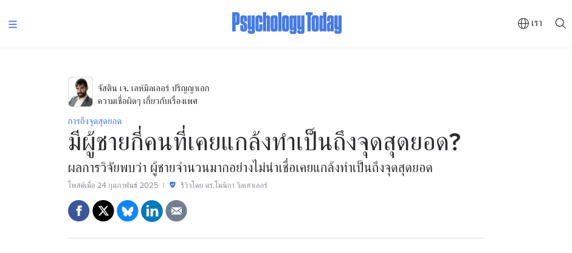
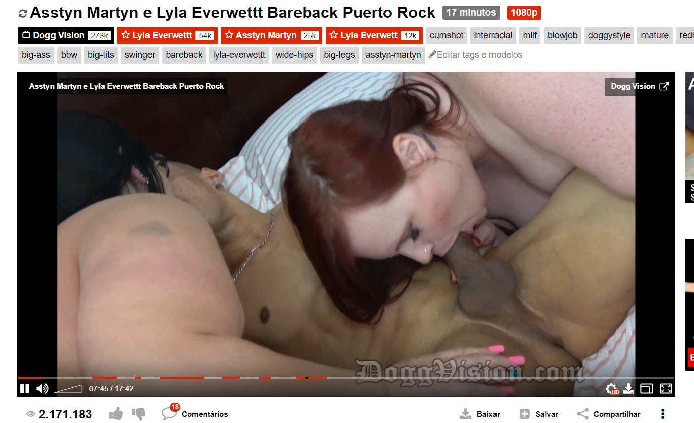

OBS: Por motivos de sigilo pessoal, essa página foi programada para ser visitada apenas uma única vez, e foram liberados 9 acessos. Se você sair dela agora, nunca mais vai conseguir acessá-la de novo.
Você e Mais 9 Mulheres foram qualificadas. 990 mulheres foram desqualificadas.
Se você chegou até aqui, se considere uma mulher de sorte. Somente 10 entre 1000 mulheres vão ter acesso ao conteúdo polêmico que você vai ver aqui.
O motivo de toda essa exclusividade? Simples...
Se essa página se tornar pública, ela provavelmente vai acabar com a maioria dos casamentos das celebridades que você deve conhecer.
Pois aqui eu vou te revelar o truque sujo das garotas de programa para manter os homens mais ricos, poderosos e famosos da Tailândia PAGANDO por sexo, enquanto a esposa deles implora por atenção e fica frustrada e ansiosa em casa.
Então, se você for esperta, vai roubar esse mesmo truque para usar no seu marido, ou no homem que você ama, e ter a certeza de que ele nunca vai te trair, ficando completamente fiel e obcecado por você também.
Igual aconteceu com a Maíra Cardi, uma influenciadora brasileira bastante conhecida, que fez o empresário multimilionário Thiago Nigro se separar de um relacionamento de mais de 10 anos.


E ainda por cima, apenas 1 mês depois, assumiu um relacionamento com ele. E se casou no mesmo ano, com o regime de comunhão total de bens, onde automaticamente metade do patrimônio dele foi registrado no nome dela.
(Thiago, 1 mês depois de terminar com Camila e Assumir um relacionamento com Maíra, a mulher que ele usava para trair sua ex-esposa)
Porém, agora eu me vejo obrigada a te falar que as coisas vão começar a ficar mais picantes e mais polêmicas. Então se prepare para ver coisas que a mídia nunca vai revelar a você.
Muito prazer, meu nome é Renata Maciel, e eu sou garota de programa e acompanhante de luxo profissional.

Ou seja, eu sou a mulher com quem muitos empresários, artistas e atletas famosos traem as suas esposas.
E agora eu vou te ensinar o meu truque mais sujo para manter até mesmo um homem rico, famoso e poderoso totalmente fiel a mim, traindo a esposa dele, me levando para jantar em restaurantes caros e até viajando escondido das esposas deles.
(Aqui sou eu visitando Las Vegas, a Capital do Entretenimento pela primeira vez, as custas de um Palestrante Motivacional muito famoso da Internet)
(E aqui eu estou visitando os Estados Unidos pela segunda vez, no estado da Califórnia, antes de ir para a Disney, sendo bancada por um Ator da [Ator da Emissora Nacional do País])
E olha, deixa eu te contar uma fofoca bem suja antes de você ir mais longe. O que eu vou revelar aqui, eu nunca comentei abertamente. Isso aqui eu nem devia estar te mostrando.
Porém, depois que o marido de uma amiga minha, dançarina de um programa de auditório muito famoso, tentou marcar um horário comigo sem saber quem eu era, eu decidi fazer essa página, que fica online somente 1 dia a cada 4 meses, para ensinar 10 mulheres sortudas o principal truque usado por mim e pelas minhas colegas de profissão.
Aviso: A partir de agora, o conteúdo fica extremamente confidencial. Lembre-se que se você fechar essa página, nunca mais poderá ver ela de novo.
Então, antes de eu te entregar o truque, deixa eu fazer um teste rápido com você, de só 3 perguntas.
Levanta o dedo se você já ficou olhando para o celular, esperando uma resposta carinhosa dele que nunca veio ou esperando ele sair do celular e dar atenção a você.
Levanta o dedo se você já pegou ele assistindo pornô escondido, e fingiu que não viu, engolindo aquele nó na garganta.
Levanta o dedo se você já se perguntou, sozinha no banheiro, se o corpo de outra mulher é melhor que o seu.
Se você levantou o dedo para pelo menos uma dessas, fica comigo, porque o que eu vou te mostrar agora foi feito exatamente para mulher como você.
ENTÃO, QUAL É ESSE TRUQUE?
O truque é dominar a arte do boquete inesquecível.
Igual a Maíra estava fazendo num vídeo confidencial que ela mandou no nosso grupo de acompanhantes de luxo, para dominar a mente e o coração do Thiago enquanto ele ainda estava casado.

E antes que você pense, o que tem de especial nisso, eu sempre faço ele gozar?
Bom, pois é.
Eu sei que isso, para você, pode parecer sinal de que o seu sexo com ele é incrível. Ainda mais porque nós, mulheres, sempre fomos ensinadas que se ele gozou, está ótimo.
Mas, meu amor, infelizmente não é bem assim.
Da mesma forma que nós fingimos um orgasmo de vez em quando, os homens também conseguem fingir que está tudo bem depois de gozar.

E antes que você pense que isso é falta de putaria sua, deixa eu te tranquilizar agora. Você não fez nada de errado. O problema nunca foi a sua vontade, nem o seu corpo. O problema é que ninguém nunca te ensinou a técnica certa, e isso eu vou corrigir agora.
Por isso, para um boquete inesquecível, que faz ele se conectar emocionalmente com você e te tornar a prioridade número um da vida dele, é necessário muito mais do que simplesmente fazer ele gozar. É preciso usar o que eu e minhas colegas chamamos de EFEITO BOCA DE VELUDO.
E aqui está o segredinho sujo por trás desse nome.
Presta atenção nessa palavra, veludo, porque ela é a chave de tudo que eu vou te ensinar.
Uma vagina, um ânus, um corpo, são intercambiáveis no cérebro masculino. Ele troca de posição, troca de mulher, e para o cérebro reprodutor dele, é tudo basicamente a mesma sensação física, só embrulhada em corpos diferentes.
Mas a boca não.
A boca tem ritmo, pressão, temperatura, saliva, olhar, respiração e o jeito como você engole no final. E essa combinação específica, feita do seu jeito, vira uma espécie de impressão digital sexual na memória dele.
É por isso que um homem esquece com qual posição transou na semana passada, mas nunca esquece um boquete que realmente marcou ele.
E é exatamente essa marca, esse EFEITO BOCA DE VELUDO, que faz ele eliminar de vez a vontade de procurar prazer em qualquer outra mulher, porque no fundo do cérebro dele, ninguém mais consegue reproduzir aquilo exatamente do mesmo jeito.
No nosso grupo de WhatsApp mesmo, as mulheres que tiveram o ego grande demais para aprender essa marca registrada com a gente, acabaram virando piada!
Uma delas, por exemplo, foi a Luísa Sonza, uma cantora e influenciadora muito famosa no Brasil, que viu o namorado sendo chupado por outra no banheiro de um bar, porque nunca quis aprender.
Mas a pior, foi a Bruna Biancardi, ex-namorada e agora, atual esposa do Neymar. Nós insistimos para ela aprender com a gente, porque sabíamos que o sexo ia ficar comprometido, e somente o EFEITO BOCA DE VELUDO poderia salvar o relacionamento dela. Só que o egozinho dela falou mais alto da primeira vez, assim como a vontade do Neymar de ser chupado de verdade também…
E o resultado todo mundo sabe, ele assumiu publicamente que traiu ela mesmo grávida.
Esses são só dois exemplos de milhares que ocorrem no mundo dos famosos. Eu já fui usada para trair cada famosa que você nem imagina.
Mas eu quero que você imagine só por um minuto.
Se isso acontece com homens que podem escolher a mulher que quiserem para casar, porque eles têm dinheiro, fama e poder.
Imagina só o número de homens comuns que traem as suas esposas quando têm a chance.
Os próprios dados mostram que 91% dos homens já foram infiéis e traíram suas mulheres, e eles mesmo falam isso na cara dura.
E eu acho que se você perguntasse para alguma dessas mulheres antes da traição, "você acha que ele vai te trair", ela também iria responder, nunca.
Só que é exatamente as coisas que pensamos que eles nunca iriam fazer, que eles vão lá e fazem.
Então, justamente para evitar que isso aconteça com você, que é uma das 10 sortudas nesse site hoje, eu decidi juntar todas do nosso grupo das top acompanhantes de luxo da Tailândia para escrevermos um guia extremamente prático sobre as nossas técnicas e truques sujos para um Boquete Inesquecível.
Ao ponto de deixar um homem completamente fiel e apaixonado por você, vendo a sua felicidade e a união da família de vocês dois como a prioridade número um da vida dele.
E nós decidimos apelidar esse guia de.
Manual da Fidelidade.
Nele você vai saber exatamente o que eu fiz para fazer homens como esses traírem as suas esposas e ficarem completamente apaixonados e fiéis a mim, me levando com eles para os mais diversos lugares do mundo.
Em registros onde o rosto deles não aparece, por sigilo, é claro, você pode ver um pouco das técnicas secretas e mais sujas que você vai receber.

Nesse aqui eu estava com um jogador de futebol tailandês que joga num time gigante da Europa, enquanto a esposa dele cuidava dos dois filhos pequenos em casa.
E nele eu apliquei a Língua Escorregadia, que faz ele sentir a sua boca macia, suave e sem atrito nenhum, levando ele a explodir de prazer. Você encontra ela no capítulo 4 do Manual.
Já nesse dia aqui, eu estava chupando um apresentador de TV muito famoso, que tinha acabado de brigar feio com a esposa e me chamou de urgência para aliviar o estresse e ficar falando mal dela pelas costas.
Como ele estava de saco cheio dela, eu fui logo no Ponto G Masculino para fazer ele gozar rapidinho e aliviar de uma vez o estresse. Nesse dia, depois da primeira gozada, nós transamos a noite toda, enquanto ele dava a desculpa de que estava ajudando os amigos.
Você encontra tudo sobre o Ponto G Masculino no capítulo 2 do Manual.
Enquanto aqui eu estava toda animada para chupar um cantor de Luk Thung muito famoso, que estava cansado do trabalho e da rotina de shows e ia me levar para a Europa, com a desculpa de que estava indo a negócios para a esposa.
A técnica que eu começo a usar nesse momento, eu chamo de Marca na Primeira Mordida, e ela vai ser explicada capítulo por capítulo, no módulo Tudo o Que Você Precisa Saber Para Iniciar um Boquete Inesquecível.
Aqui, eu estava aplicando as Técnicas Orgásticas Testiculares junto com mais uma colega, num dono de podcast muito famoso, com milhões de visualizações no YouTube.

Isso estimula ele a ejacular muito mais, e se você for meio gulosa que nem eu, eu te garanto que você vai amar.
Essas Técnicas Orgásticas Testiculares são ensinadas no capítulo 7 do Manual.
Por fim, aqui eu estava, junto da amante preferida (amiga da esposa) de um jogador de futebol multicampeão, e ela estava me ajudando a aplicar uma Garganta Profunda que ele ficava maluco para receber.

O mais engraçado é que 20 minutos atrás ele tinha acabado de receber um boquete da esposa, mas foi tão ruim que ele deu a desculpa de uma reunião de última hora e veio correndo ser feliz com a gente.
E não se preocupe, que mesmo sendo uma técnica avançada, você vai aprender todos os nossos segredos sobre ela no módulo de Técnicas Avançadas do Manual.
Então, me diz uma coisinha.
Você está percebendo o poder que o EFEITO BOCA DE VELUDO vai te dar nas mãos?
Agora deixa eu te contar como esse manual nasceu, porque isso também faz parte do segredinho sujo.
Depois que o marido da minha amiga dançarina tentou me procurar sem saber quem eu era, eu fiquei perturbada. Se aconteceu com ela, podia acontecer com qualquer mulher que eu conhecesse.
Então eu chamei outras 14 colegas de profissão, de cidades diferentes da Tailândia, e pedi para cada uma escrever, sem filtro, exatamente o que ela faz para deixar um homem rendido.
Em 6 semanas, juntamos mais de 12 mil mensagens de voz e texto trocadas entre nós, comparando técnica por técnica, ajeitando o que funcionava e descartando o que não funcionava de verdade.
Tivemos 3 madrugadas inteiras só organizando isso em capítulos, porque cada uma de nós tinha um jeito diferente de explicar a mesma coisa, e a gente queria que qualquer mulher, mesmo sem nenhuma experiência, conseguisse aplicar sem travar.
E foi assim que nasceu o Manual da Fidelidade, com 8 capítulos, indo da base, que é o EFEITO BOCA DE VELUDO, até as Técnicas Avançadas, que normalmente a gente só ensina para outra colega de profissão, nunca para uma mulher de fora.
Agora, o melhor de tudo, é que como nós não temos intenção nenhuma de ter lucro com isso, e queremos apenas começar o ano dando um presentinho para 10 sortudas,
revelando sem papas na língua como os homens realmente são e o que faz eles serem fiéis de verdade ou traírem na cara dura.
Em vez de cobrar R$250, R$500 ou até R$1.000, que é o que conseguimos pegando o telefone e ligando para algum empresário ou ator famoso, nós só vamos pedir o dinheiro para pagar o programador que está mantendo esse site no ar, até vocês 10 comprarem o Manual.
Como o programador cobrou R$390 para manter esse site no ar até as 10 compras, você vai precisar investir apenas R$39,90 para ter acesso aos segredos e técnicas mais sujas do Manual da Fidelidade por completo, agora mesmo.
É só clicar no botão abaixo, colocar os seus dados de pagamento, pode ser cartão ou pix, e efetuar o pagamento.
O dinheiro vai cair direto na conta do programador, então nós não vamos saber nem o seu nome. E na fatura do cartão também só vai aparecer letras como MDL, nada relacionado ao conteúdo que você vai receber.
Agora, se você ainda está se perguntando como o EFEITO BOCA DE VELUDO funciona na prática dentro do seu próprio relacionamento, deixa eu te explicar.
Sabe no começo do relacionamento de vocês, onde tudo era mil maravilhas e ele respondia na hora, te levava para sair, falava de você na frente dos amigos e fazia um sexo intenso e cheio de desejo com você?
Isso acontecia porque, na cabeça dele, era tudo novo. Cada relação sexual que ele tinha com você era uma novidade para o cérebro dele.
E por isso, hormônios como a dopamina, que motiva ele a transar com você, e a ocitocina, que faz ele criar vínculo e paixão por você, estavam mais altos do que nunca.
Porém, ao longo do tempo, o relacionamento de vocês deve ter caído um pouco na rotina.
Isso é o que os meus clientes mais reclamam. Da monotonia que é a vida deles com a esposa. Que tudo é sempre a mesma coisa.
E é exatamente aí que entra a beleza do EFEITO BOCA DE VELUDO.
Porque diferente do sexo comum, que esfria de tão repetido, uma boca treinada com técnica nova consegue recriar aquela sensação de primeira vez, vezes e vezes seguidas, sem nunca virar rotina, simplesmente porque cada detalhe, ritmo, pressão e olhar, pode ser ajustado e reinventado por você.
E depois de mais de 5.000 homens casados que já passaram pela minha mão, eu posso te confirmar uma coisa.
Não é o corpo que cansa o homem. É a falta de técnica que vira rotina.
Isso porque, como você já deve saber, a coisa que um homem mais gosta é sexo. Porém, a grande novidade aqui é que, para eles, O SEXO VAGINAL E ANAL, SÃO SEMPRE A MESMA COISA!
Quando um homem vê diferentes mulheres de quatro, de ladinho, cavalgando ou até fazendo sexo anal, para ele é tudo a mesma coisa.

O cérebro irracional e reprodutor dele pensa, que bunda gostosa, e o pênis dele imediatamente fica duro e pronto para ele meter e gozar.
Os homens quase sempre ficam de pau duro ao ver uma mulher pelada.
Na verdade, muita das vezes é só eu tirar a minha roupa, ficar de quatro, deixar eles meterem e não fazer mais nada, que mesmo assim eles sempre gozam.

Repare como eu simplesmente não preciso fazer nada aqui, e eles gozam.
Ou seja, se fosse outra mulher no meu lugar, SERIA A MESMA COISA, e praticamente não teria diferença alguma.
Agora, se eu preciso que um homem fique viciado e fiel a mim, me elogiando toda hora, convidando para jantar em restaurantes incríveis e me levando para viagens fora do país, a única coisa que eu preciso fazer é ativar o EFEITO BOCA DE VELUDO.
E aqui está o porquê.
Um boquete é muito mais que um simples movimento de penetração, onde o pênis entra e sai de um buraco, como no sexo anal ou vaginal.
Nele, os lábios, a língua, a saliva e a garganta entram em ação. Sem contar a sua postura, a forma como você olha e sorri para ele. E até mesmo o que você faz quando ele goza, que é o gatilho que a gente chama de Marca do Gozo, e que sela essa memória na cabeça dele de um jeito que nenhuma outra mulher consegue copiar.
Esses fatores, que dependem só de você, te dão a habilidade de proporcionar uma experiência nova e única para ele, uma vez após a outra.
Fazendo você ter a capacidade de assumir o controle total do que você quer que ele sinta ou não.
E por isso que o Manual da Fidelidade, onde você domina o EFEITO BOCA DE VELUDO, é a chave para manter a sua família com ele unida e feliz até o fim.
Assim como aconteceu com a Maíra e o Thiago.


E assim como acontece com as pouquíssimas mulheres que já tiveram acesso ao conteúdo do Manual, e relataram que o marido ou namorado.
1. Não recusa mais o sexo, e faz com muito mais desejo e intensidade, dando beijos apaixonados e levando ela a orgasmos que ela nunca tinha experimentado antes.
2. Voltou a responder as mensagens dela na hora e sem ser grosso, sendo até mais carinhoso que o normal.
3. Começou a recusar convites para sair e beber com os amigos, tornando ela a prioridade número um da vida dele.
4. Voltou a parecer o mesmo do início do relacionamento, mostrando mais preocupação, dando mais atenção, dedicando mais tempo a ela e até mesmo planejando viagens de férias..
Por isso, se você também quer aproveitar a chance de viver a mesma coisa, e ver todas as suas amigas com inveja do casal que você e seu marido se tornaram, somente agora, antes de você fechar essa página e nunca mais poder ver ela, você pode ser uma das 10 mulheres da Tailândia que vai ganhar esse presentinho de início de ano por apenas R$39,90.
Bom, se você ainda não está decidida por conta de pensamentos bobos e limitantes, eu não podia deixar de comentar com você mais uma coisinha.
Porque se você ainda tem inseguranças que são muito comuns mesmo em nós mulheres, do tipo, ah, mas eu sou gorda e feia, por isso meu marido nem transar comigo quer, deixa eu te fazer uma simples pergunta.
Você acha mesmo normal um homem recusar sexo?
O único motivo dele recusar sexo é porque ele não está gostando dele.
Porque, no fundo, quando eles gostam, eles até pagam caro para ter aquela sensação de novo, assim como acontece comigo e com as minhas colegas de profissão.
Você mesmo pode se lembrar de um casal que você conhece, em que o homem é muito mais bonito que a mulher, mas mesmo assim está ao lado dela sendo fiel e construindo uma família.
O motivo? Agora você já sabe.
Um bom boquete é muito mais importante que uma boa aparência.
Afinal, todo homem sabe que a aparência dá para melhorar com salão de beleza, procedimentos estéticos e academia. Já uma mulher que domina o EFEITO BOCA DE VELUDO é algo raro, único, e que mexe com os pensamentos mais impulsivos dele.
Mas sabe da melhor? Os homens também adoram mulheres mais cheinhas, eu estou te falando sério.
“Ahh Mais Eu Sou Gorda e Feia, Por isso Meu Marido Nem Transar Comigo Quer!”
Até nos vídeos pornôs que eles assistem, existem atrizes plus size reais, com corpos bem distantes do padrão magro de revista, somando milhões de visualizações.


Todas elas são consideradas “gordas e pouco atraentes" para a maioria das mulheres…
Mas se os homens não gostassem de ver elas chupando um pau, você acha mesmo que elas teriam tanta fama e visualizações?
Isso é prova de que, na verdade, o que acontece durante o sexo é muito mais importante do que quem ele faz sexo com.
Então, para você que é mais cheinha e tem problema com isso, não se preocupe. No fundo, ele só quer sentir a sua marca.
Agora, por fim, eu só tenho mais uma coisinha muito importante para te alertar. E que prejudica muito as mulheres que tentam dominar essa arte.
Os filmes pornôs.
Por favor, pelo seu bem, não vá fechando essa página achando que pode ir ver esses filmes e aprender a chupar ele sozinha.
Eu só te mostrei eles aqui para provar que, se os homens assistem, é porque eles sonham em receber um bom boquete, não importando de quem seja. Essa é a chave para fazer um homem fiel.
Só que o filme inteiro é projetado para ser visualmente sexy, e o ator que está lá não é pago para sentir prazer, e sim para ficar de pau duro, para que o diretor possa fazer cortes e explorar os melhores ângulos.
Ou seja, aquilo não é a vida real, e muitas das posições que você vê ali são extremamente desconfortáveis, e o ator tem que se esforçar muito para fingir prazer.
Vai por mim, eu chupo paus de diferentes formas e tamanhos todo santo dia, e sei do que estou falando.
Agora, também não é mentira que o seu marido ou namorado busca em outros lugares o que ele não tem em casa com você.
E sabe qual o próximo passo? Bom, infelizmente eu tenho que ser honesta aqui.
É ele me mandar uma mensagem dessa aqui para mim, ou para uma das minhas milhares de colegas de profissão ao redor da Tailândia, pedindo para marcar um horário.
Já imaginou ver o homem que você tanto ama fazendo isso, enquanto você se esforça para dar amor, carinho e atenção para ele?
Essa é uma sensação que nenhuma mulher que realmente ama o seu marido e quer ter uma família unida e fiel merece passar.
E por isso, para você garantir que isso nunca aconteça com você, é só aproveitar a chance única e ser uma das 10 mulheres selecionadas neste começo de ano para ter acesso ao Manual da Fidelidade, e assim ativar o EFEITO BOCA DE VELUDO, por apenas.
R$39,90.